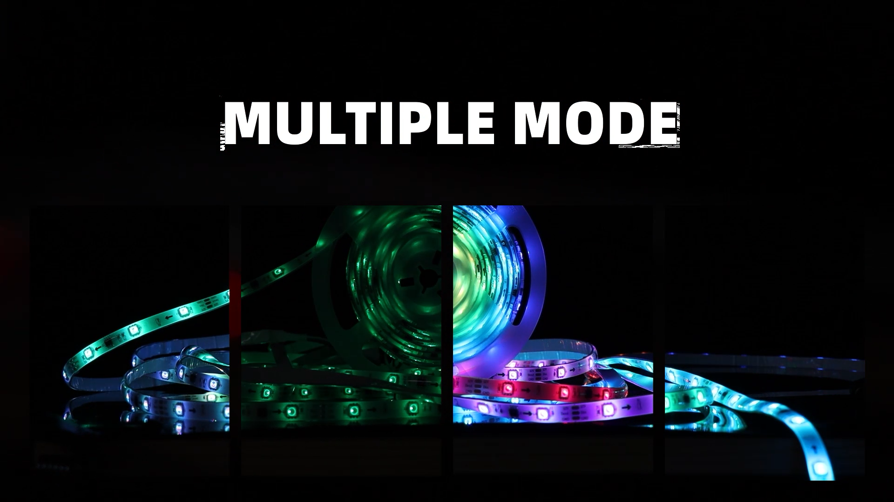
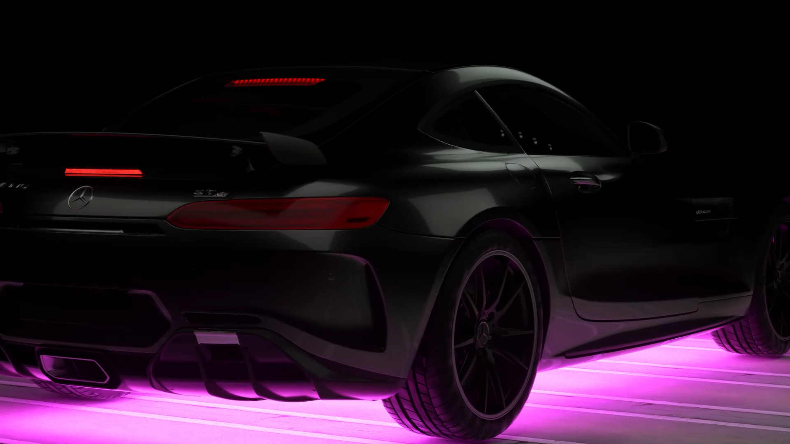
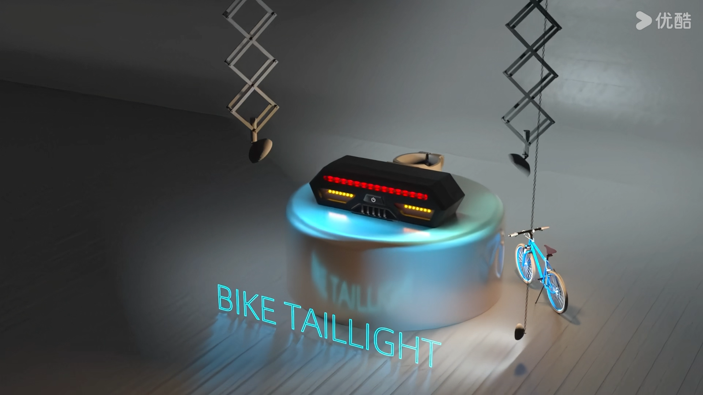
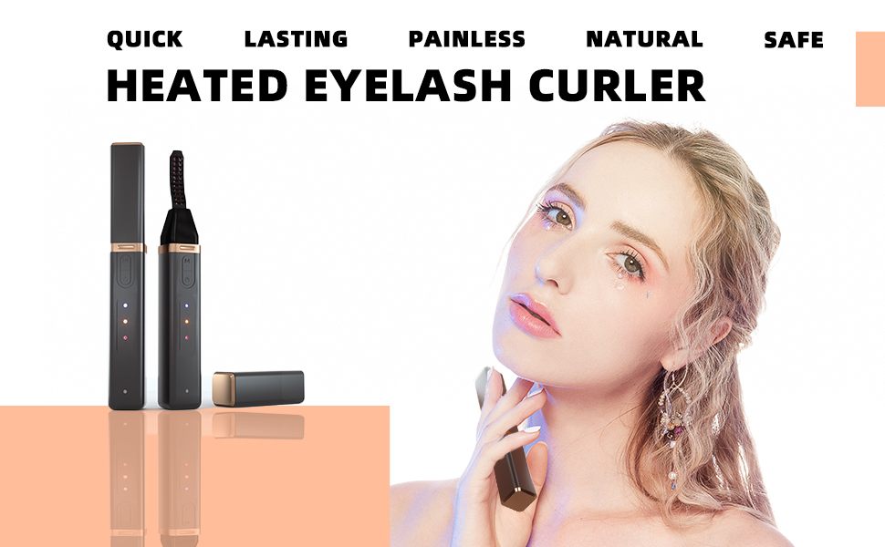
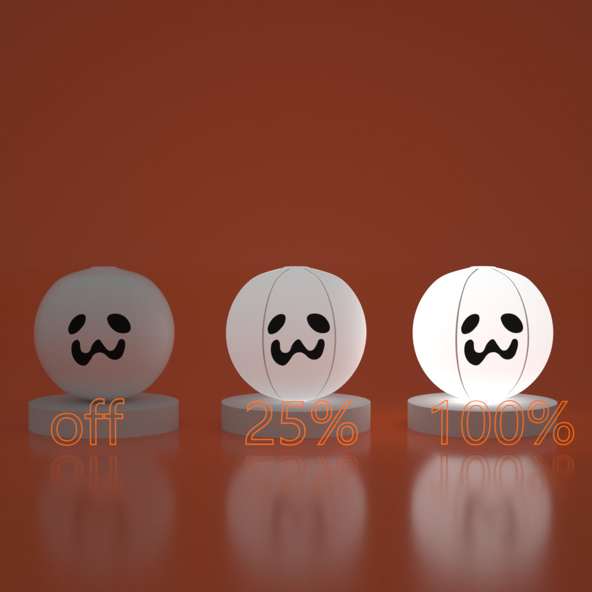
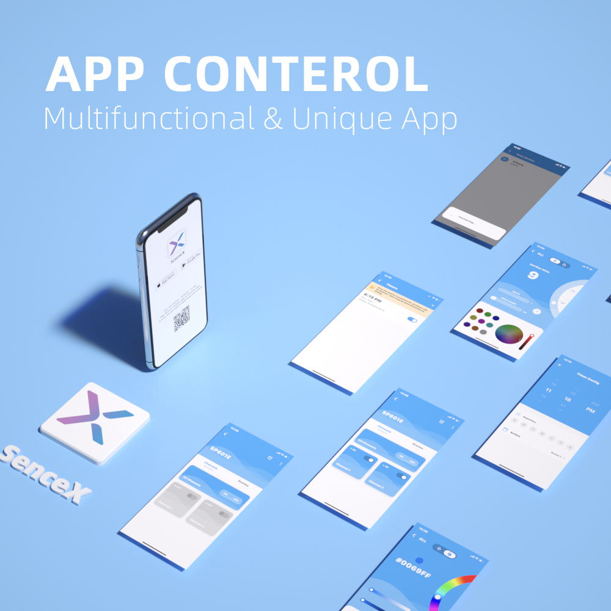
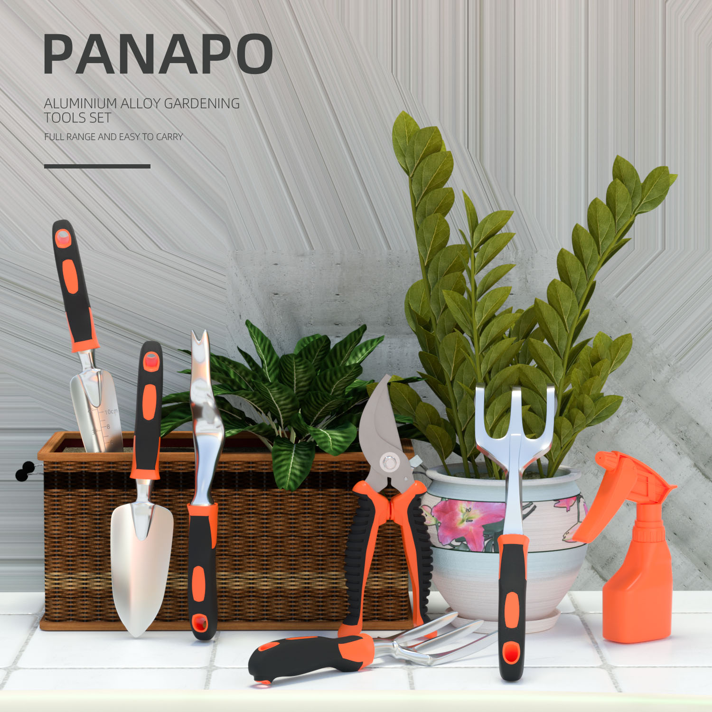

SHOWREEL 26 VIA KSCMERROR
一分钟了解我的视觉风格
向下滚动
PORTFOLIO · 动态
 00:25
00:25
Cyber 故障艺术 Cyber Glitch Art
二次元 · 剪辑 · 视频开头 · 素材拼接

00:31灯带广告 LED Strip AD
剪辑 · 拍摄 · 节奏卡点

01:10车底氛围灯 Underglow Light
渲染 · 剪辑 · 演示

00:36自行车转向灯 Bike Turn Signal
渲染 · 拍摄 · 剪辑
Cyber 故障艺术
灯带广告
车底氛围灯
自行车转向灯
PORTFOLIO · 静态





MORE · 关于
莉娜
リナ
KSCMerror
视觉设计师
从电商起步，一开始只做产品静物，后来慢慢摸到动态视觉。现在什么都能接——单品爆款、品牌宣传片、企业 VI，甚至二次元二创。学东西不算快，但一直在学。对我来说，认真对待每个项目，比追求所谓"风格"更重要。
莉娜弥文
RINA MIFUMI
开发中我在用 AI 搭建一个真正懂我创作习惯的助手。莉娜基于本地多模态模型运行，所有数据存在本地，不用联网也能用。长期目标是让她能看懂我的草图、理解我的视觉风格——从记忆助手进化成创作搭档。
🤖 本项目由 AI 辅助开发，我负责设计与决策